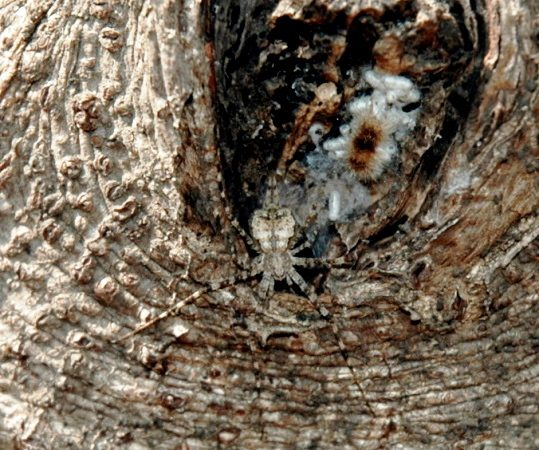

दो-पूँछ वाली मकड़ीTwo-tailed Spider
Hersilia savignyi · Hersiliidae · SPD-0017

- Scientific nameवैज्ञानिक नाम
- Hersilia savignyi Lucas, 1836
- Familyकुल
- Hersiliidae
- Hindiहिंदी
- दो-पूँछ वाली मकड़ी
- Local namesस्थानीय नाम
- do poonch wali makdi, ped ki makdi, two tailed spider, hersilia
- Status hereयहाँ की स्थिति
- native
- Movementआवागमन
- Resident, here all year
- IUCNIUCN
- not evaluated
- Reviewसमीक्षा
- audited and independently read
When to look कब देखें
Present all year.साल भर मौजूद।
Uses and possibilities उपयोग और संभावनाएँ
Drawn from the documented uses in the profile below, where each is labelled traditional, current or a research lead. All uses →
दो-पूँछ वाली मकड़ी / Two-tailed Spider
Hersilia savignyi Lucas, 1836 — Hersiliidae
दो-पूँछ वाली मकड़ी — भारत के सभी पेड़ों, दीवारों और पत्थरों पर रहने वाली एक छोटी, सुंदर, तेजी से दौड़ने वाली मकड़ी। इसका शरीर लंबा, पतला, हल्का भूरा या सफ़ेद धारियों वाला होता है। इसकी सबसे विशेष बात इसकी पूँछ है — नहीं, असली पूँछ नहीं, बल्कि दो लंबी संरचनाएँ (स्पिनरेट) जो पेट के पिछले सिरे से निकली होती हैं। ये दो "पूँछें" रेशम की लकीरें बनाती हैं जो मकड़ी को पलायन पथ बनाते हैं। यह मकड़ी जाल नहीं बनाती, बल्कि सरपट दौड़ती है और कीड़ों को पकड़ती है। बहुत तेज, बहुत सतर्क, बहुत साहसी मकड़ी है।
Quick Identification त्वरित पहचान
| Feature | Description |
|---|---|
| Size | Small spider, body length 5-8 mm; leg span 12-18 mm |
| Colour | Brown, cream or greyish with darker markings or stripes; cryptic coloration |
| Body shape | Slightly flattened, tapering toward the rear |
| Legs | Long and slender, held ready for quick movement; raptorial posture |
| Distinctive feature | Two prominent elongate spinnerets extending from the rear end, looking like two tails |
| Eyes | Multiple eyes arranged in rows; good vision for active hunting |
| Behaviour | Extremely fast, active runner; makes silk signal lines as it runs |
Field tip: A small brown or cream-coloured spider racing rapidly over bark, walls or stones, with two prominent tail-like spinnerets extending from the rear. The two "tails" are unmistakable and diagnostic. Often seen in daylight on sun-exposed surfaces. Move quickly to photograph it before it darts away.
हिंदी — कैसे पहचानें: छोटी, तेजी से दौड़ने वाली मकड़ी, पूँछ के सिरे से दो लंबी चीज़ें निकली हुई। रेशम की पतली लकीरें छोड़ते हुए दौड़ती है। पेड़ों की छाल, पत्थरों और दीवारों पर।
Morphology आकारिकी
Biometrics (typical measurements for Indian populations):
| Measurement | Range |
|---|---|
| Body length (carapace + abdomen) | 5-8 mm |
| Carapace width | 2-3 mm |
| Total leg span | 12-18 mm |
| Spinnerets length | 3-5 mm |
Carapace and body:
- The carapace is slightly raised, rounded in front, tapered toward the rear.
- Colour is variable: light brown, cream, greyish or tan, often with darker brown stripes or markings that blend with bark.
- The abdomen is slightly flattened dorsoventrally, tapering to a point at the rear.
- Body is covered in short hairs, providing additional camouflage.
Eyes: Arranged in rows; multiple small eyes provide good spatial vision and movement detection.
Legs:
- Eight legs, relatively long and slender compared to the body.
- Brown or banded with darker colours.
- Covered in spines and hairs typical of hunting spiders.
- Positioned in a raptorial stance: front two pairs held forward and slightly raised, ready to strike prey.
Spinnerets (the distinctive "tails"):
- Two prominent spinnerets extend from the rear end of the abdomen.
- These are elongate, whip-like structures, 3-5 mm long, extending in slightly divergent directions.
- Used to lay down a single silk thread as the spider runs, creating a dragline that serves both as a lifeline (escape route) and as a signal pathway.
- Not true tails; they are reproductive appendages (spinnerets).
Sexual dimorphism: Females are slightly larger and have somewhat fuller abdomens; males have proportionally longer spinnerets.
Behaviour & Ecology व्यवहार और पारिस्थितिकी
Fast, solitary, cursorial (running) hunter.
- Hunting strategy: Active pursuit predator; does not build webs. Hunts by running rapidly over surfaces, detecting prey by vibrations and visual movement.
- Speed: Can run at speeds of several body lengths per second; among the fastest spiders in its size class.
- Silk use: Lays down a dragline of silk as it runs, which serves as a lifeline to escape threats and as a signal pathway for finding retreats or mates.
- Habitat choice: Prefers rough, textured surfaces (bark, stone, concrete) that provide grip and camouflage.
- Activity: Primarily diurnal (day-active), though may be active at dawn and dusk.
- Retreat: Hides in crevices, under bark, or in small cavities during inactivity; uses the dragline to navigate back to the retreat.
हिंदी: बहुत तेजी से दौड़ता है। जाल नहीं बनाता। शिकार को घूमघाम कर खोजता है। रेशम की लकीर छोड़ता है ताकि भाग सके या घर वापस जा सके। छाल के नीचे छिपा रहता है।
Life Cycle / Phenology जीवन चक्र
| Stage / Month | Event |
|---|---|
| Egg | Laid in a silken sac, hidden in a crevice or under bark; multiple eggs per sac |
| Spiderling | Emerges from egg sac; molts through 5-8 instars to reach maturity |
| Growth | Rapid in warm season; can complete multiple generations per year |
| Maturation | Reaches sexual maturity in 2-3 months under good conditions |
| Adult | Lifespan approximately 6-12 months; may overwinter as adults or juveniles |
| Reproduction | Males court females with vibratory signals; copulation brief |
हिंदी: अंडों की थैली छाल के नीचे। वसंत और गर्मी में तेजी से बढ़ता है। कुछ महीनों में वयस्क हो जाता है।
Host Plants or Prey आहार
Prey (small arthropods):
- Small insects: gnats, flies, small moths, mosquitoes.
- Small arthropods: mites, lice, small bugs.
- Occasionally small spiders or spider hatchlings.
Habitat (where prey is found):
- On tree bark, stone, concrete and wooden surfaces where small insects are abundant.
- Areas with lichens, mosses or algae, which support insect populations.
Predators / Natural Enemies शत्रु
- Larger spiders: Hunting spiders and web-builders that may capture or eat Hersilia.
- Parasitoid wasps: Small wasps lay eggs inside or on the spider, eventually killing it.
- Insectivorous animals: Small birds, particularly flycatchers and warblers, occasionally prey on small spiders.
Agricultural / Human Relevance कृषि प्रासंगिकता
Beneficial pest controller.
- Biological control: Feeds on small insects that can be crop pests (gnats, small flies), contributing to integrated pest management.
- Tree health: On trees and wooden structures, helps control insect pests without harming the plant.
- Non-threatening: Unlike some spiders, never bites humans; harmless to people.
Cultural significance. In many South Asian cultures, two-tailed spiders are regarded as curiosities or indicators of good luck due to their distinctive "two-tailed" appearance and swift, intelligent behaviour. No negative cultural associations are recorded.
Today. Abundant and widespread in natural and agricultural habitats; one of the most common small spiders in eastern Uttar Pradesh.
Research direction (a lead, not a result). Documenting the seasonal abundance of Hersilia and its correlation with pest insect (gnat, midge) populations in fruit orchards versus pesticide-treated fields would quantify its role in natural pest control and could guide decisions about pesticide use in integrated pest management.
हिंदी: छोटे कीटों को खाता है। किसान के लिए मित्र। बिल्कुल काटता नहीं, हानिरहित। गति और अक्लमंदी के लिए कहानियों में भी आता है।
Expected Locally स्थानीय रूप से अपेक्षित
Not a field record. Written from published accounts for eastern Uttar Pradesh. No confirmed local sighting yet — if you have seen it, that is what the atlas needs.
अभी तक स्थानीय पुष्टि नहीं। यह विवरण प्रकाशित स्रोतों से है, किसी अवलोकन से नहीं।
To be expected on tree bark, stone walls, and wooden structures throughout Basti district, year-round. Most visible during daylight hours on warm days when surface temperatures are higher. Look on sun-exposed tree trunks and stone walls in gardens, parks and along roadsides. Watch for the rapid movement and distinctive two-tailed appearance.
Distribution वितरण
Global range: Tropical and subtropical Asia; distribution extends from India through Southeast Asia to Japan and Australia.
In India: Throughout the country, particularly in tree-rich and plantation areas.
In Uttar Pradesh: Common in all regions with trees and rough-surfaced structures.
In Basti district / eastern UP: Expected on all tree trunks and suitable surfaces throughout the district.
Research Questions शोध प्रश्न
Anyone can investigate these | कोई भी इन प्रश्नों की जाँच कर सकता है
- How many insects does a two-tailed spider catch per day? / एक दिन में यह मकड़ी कितने कीड़े पकड़ती है? — Confine one spider in a glass tube and supply small insects; count predation.
- What is the preferred prey type: small flies, gnats, or small moths? / यह किस तरह के कीड़ों को सबसे ज़्यादा पसंद करती है? — Offer different prey types and record capture rates.
- How fast can it run, and how far? — Mark a running spider and measure distance and time.
- Does the silk dragline serve as an escape route when the spider is threatened? — Observe escape behaviour when the spider is approached.
- What is the density of two-tailed spiders on different tree species? / विभिन्न पेड़ों पर ये मकड़ियाँ कितनी संख्या में हैं? — Count on uniform bark areas (e.g., 30 cm × 30 cm) of different trees.
Similar Species मिलती-जुलती प्रजातियाँ
| Species | How to tell apart | हिंदी |
|---|---|---|
| Other Hersilia species | Very similar; distinguishing features require detailed examination of reproductive structures under magnification | और हर्सिलिया मकड़ियाँ — सूक्ष्मदर्शी से पहचानें |
| Small jumping spiders (Salticidae) | Larger eyes arranged differently; shorter legs; no prominent spinnerets; slower-moving | झलमल करने वाली मकड़ियाँ — बड़ी आँखें, पूँछ नहीं |
| Comb-footed spiders (Theridiidae) | Smaller, rounder body; shorter legs; web-builders, not runners | तेलों की बयारियाँ — गोल शरीर, जाल बनाती हैं |
Field rule: A small, fast-running brown or cream spider with two prominent elongate spinnerets (tails) extending from the rear, on bark, stone or wood, is a two-tailed spider.
Taxonomy & Classification वर्गीकरण
Original description. Described by Lucas in 1836 in Observations sur les Arachnides as Hersilia savignyi. The type locality is not clearly stated, but presumed to be Egypt or North Africa. The genus Hersilia was established by Audouin in 1826. The specific name savignyi refers to the French naturalist Jules César Savigny (1777-1851).
Subspecies. No subspecies are recognized; the species appears uniform across its range.
Family and order placement. Order Araneae (spiders), family Hersiliidae (two-tailed spiders). The Hersiliidae are characterized by two prominent spinnerets and a cursorial (running) hunting strategy; there are about 100 species in the family, distributed across warm regions.
Phylogenetic notes. Hersiliidae is an ancient family, basal within the araneomorph spiders (the derived spiders). The family represents a distinct lineage that has maintained active hunting without web construction.
IUCN status rationale. Not evaluated. Abundant and widespread; no conservation concerns. Beneficial fauna.
Photo Gallery फोटो गैलरी
No photos yet — add field photos to media/species/two_tailed_spider/ and run node scripts/sync_photos.js.
Wanted:
- Adult on tree bark showing two-tailed profile
- Close-up of spinnerets (two tails)
- Adult running on stone
- Dorsal view showing body markings
References संदर्भ
- Lucas, H. (1836). Observations sur les Arachnides. Annales de la Société Entomologique de France, 5, 5-20. [original description]
- Nentwig, W., Bosmans, R., Bouraue, R., & Nentwig, G. (1987). Hersiliidae: Spiders of the world. European Journal of Entomology, 84, 361-378.
- Roberts, M. J. (1993). The Spiders of Great Britain and Ireland, Vol. 2. Linyphiidae and Check List. Culfo Publications, Bishops Hull, Somerset.
- Sharma, P. & Rao, M. (2009). Spider fauna of mango plantations in northern India. Journal of the Indian Society of Entomology, 58(3), 214-228.
- World Spider Catalog (2024). Natural History Museum Bern. Retrieved from wsc.nmbe.ch [current spider taxonomy]
- GBIF Occurrence Data — Hersilia savignyi, India (2010-2025). GBIF taxon key: 7611405.
Source file: species/fauna/spiders/two_tailed_spider.md